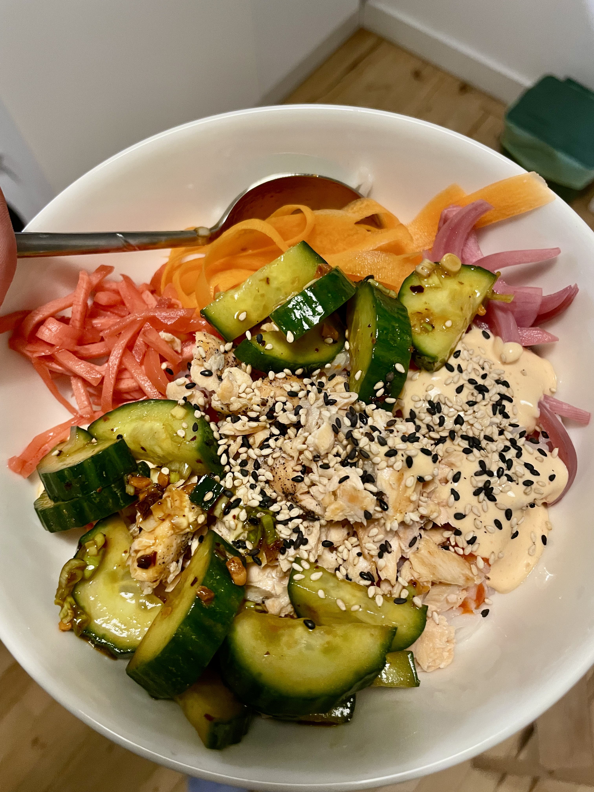

Asian cucumber salad
Ingredients
- 1 cucumber
- 1 tsp salt
- 1 small shallot
- 2-3 spring onions
- 3-4 tsp chilli crisps
- 2 tsp of semane seeds
- 2 tbsp rice vinegar
- 1 tbsp soy sauce
- 1 tsp sesame oil
Instructions
- Smash or cut the cucumber in half lengthwise and then slice it into mouth size pieces
- Place the cucumber in a food storage container and sprinkle with salt. Let sit for 10 minutes to draw out excess moisture
- Drain the cucumber and mix in the the remaining ingredients
- Shake violently so that the cucumber and ingredients get mixed well
- Taste and adjust seasoning
- Store in the fridge until serving